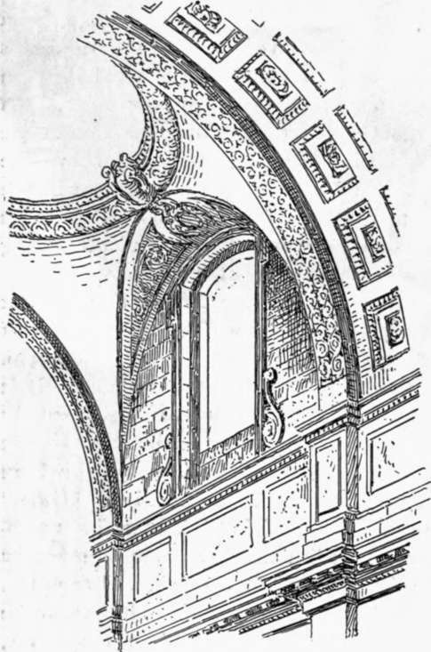
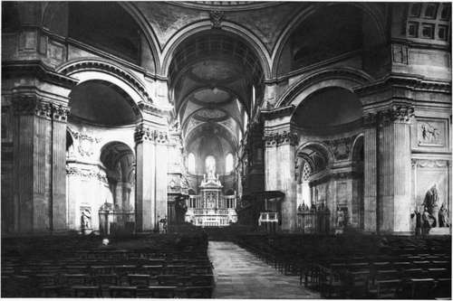
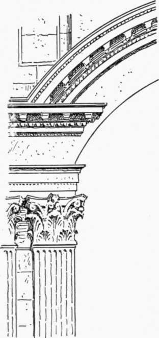
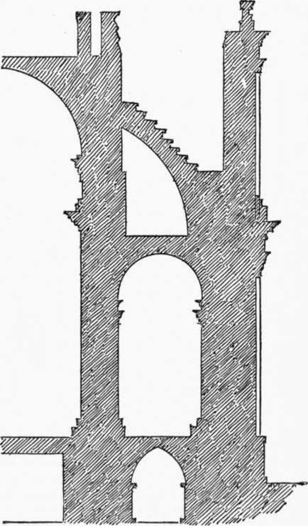

Jones And Wren. Part 6
Description
This section is from the book "Character Of Renaissance Architecture", by Charles Herbert Moore. Also available from Amazon: Character of Renaissance Architecture.
Jones And Wren. Part 6
This remarkable scheme embodies the last notable attempt to solve the great dome problem with which the architects of the Renaissance had struggled from the time of Brunelleschi. But the problem is incapable of a satisfactory solution. It is impossible to make a large unbuttressed dome stand securely except by the extraneous means of binding chains. Wren has not attempted to do such a thing. He was too good an engineer to follow in the footsteps of Brunelleschi and Michael Angelo. His dome is well buttressed, but it is therefore necessarily hidden from view. To raise another dome of masonry from the cornice of the drum for external effect, and to crown such a dome with a stone lantern fifty feet high, he saw to be impossible with safety. A semblance of such a dome was, however, necessary to his scheme. He had been charged to make a dome "conspicuous above the houses," and he therefore surrounded the cone, the true support of the lantern, with a wooden counterfeit of a dome upon which he makes the beholder believe that the lantern rests. The system is thus a monstrous architectural deceit. We have criticised Michael Angelo for springing a great dome from the top of a drum, but he cannot be reproached for deception. His dome is a real dome of masonry, and does carry the lantern as it appears to, though, as we have seen, insecurely, except for so long as the binding chains can be made to save it from collapse. Wren would not build a dome in this inherently weak manner. He preferred to design his masonry construction on sound principles, which would not allow an external dome, and to enclose this within the wooden counterfeit. And it may here be remarked that most modern domes, modelled after St. Peter's and St. Paul's, are wooden constructions and carry lanterns of wood. They are thus entirely safe, but they have not the monumental character of great architectural works.
In general external effect the dome of St. Paul's has much merit, if it does not justify the extravagant remark of Mr. Loftie that it is the " noblest dome in Christendom."1
The proportions of the interior of the church (Plate XII) are admirable, and give a better effect of scale than the larger scheme of St. Peter's. But the details exhibit more of those aberrations that are inherent in the architecture of the Renaissance. The vaulting of the nave (Fig. 137) is in oblong compartments with their long axes running transversely, and the small domes, which are low spherical segments instead of hemispheres, therefore leave considerable intervals at each end of each compartment, over which segments of barrel vaulting, of a form generated by the elliptical lunettes of the clerestory, are turned. The pendentives thus have a peculiar shape, and are segments of a hemisphere cut by four vertical planes coinciding with the sides of the vault compartment, by a horizontal plane at the base of the dome, and by the interpenetrating barrel vaults. The compartments are separated by transverse ribs, and these, together with the groins formed by the meeting of the pendentives and the interpenetrating lunette vaults, give a somewhat mediaeval effect to the vaulting conoid. In other words the lines of the groins and the lunette arches form a combination not unlike that of Gothic vaulting. This may have been one of the points in which Wren fancied that he could " reconcile the Gothic to a better manner."
1 W. J. Loftie, Inigo Jones and Sir Christopher Wren, London, Macmillan & Co., 1893, p. 196.
Fig. 137. — Vaulting of St. Paul's.
Plate XII
Interior Of St. Paul's London
In the great order Wren has departed from the scheme of St. Peter's in giving only one pilaster to each pier of the nave, though in the larger piers under the great dome he has set them in pairs. Under the archivolts of the great arcade and under the aisle vaulting the smaller pilasters are coupled, while in St. Peter's they are single. With the details of these orders the architect took great liberties in utter disregard of the canons of Vitruvius and the neo-classic authorities. The crowns of the great arches reach high above the capitals of the pilasters, so that a complete entablature cannot pass over them. It would not, of course, do to allow the archivolts to cut into an entablature, and Wren has therefore omitted the architrave and frieze in the intervals of the order, and has included them only in a ressaut over each pilaster, the cornice alone being carried over the arch. To give the vaulting its admirable elevation without unduly magnifying the great order, as Michael Angelo did in St. Peter's, an attic is interposed, but to spring a vault from an attic wall is an architectural barbarism ; though it is perhaps no greater one than to spring it from an entablature, as the architects of the Renaissance had done from Brunelleschi down. In the small order of the aisles the entablature is simplified, and has only an architrave and cornice; while a member, like a diminutive attic, in retreat of the cornice, is interposed at the impost. It looks as if this had been done in order to raise the springing of the arches so that no part of them would be cut off from view by the salience of the cornice; and it was apparently in part for the same reason that the attic was interposed in the nave. The motive is commendable. The effect of vaulting rising directly from a salient cornice Wren may justly have felt to be a bad one, but to avoid it while using classic details necessitates these strange inconsistencies.
Among numerous other aberrations of this pseudo-classic scheme is the treatment of the segmental archivolts of the small half domes that open out of the oblique sides of the great octagon at the crossing. The orders of the crossing piers have complete entablatures (Fig. 138), and the archivolts in question are in two parts answering to the frieze and cornice of these entablatures, which they intersect in the awkward manner shown in the figure. To have mitred the cornice of the archivolt to that of the order would have left the pilaster beneath with an incomplete entablature, and the architect preferred to run the cornice through the archivolt in this unsightly way. Such were some of the further makeshifts to which the designers of the Renaissance had to resort in their efforts to apply the classic orders to uses for which they were not adapted. But all such aberrations in the use of classic elements are superficial and open. A more radical violation of architectural veracity is found in the manner in which the buttress system is concealed. The thrusts of the nave vaulting are met by a series of flying buttresses carried over the aisle roof in Gothic fashion (Fig. 139). But it would not do to have flying buttresses appear in an ostensibly classic system, and Wren accordingly hid them from sight by a screen wall made to look like an upper story in the general view of the exterior. It is not until one mounts to the terrace of the drum, and looking down finds the space between the clerestory and outer wall open to the sky, that he discovers the buttresses there, and realizes the deceitful character of the architectural scheme. Perhaps this illustrates another point in which Wren " sought to reconcile the Gothic to a better manner." A similar treatment occurs in that part of the nave of St. Peter's which was built by Maderno. Michael Angelo's great external order had obliged him, as we saw (p. 68), to carry up the aisle wall to the height of the clerestory, but he filled up the space over the aisle with his small embedded dome (Fig. 32, p. 69). In Maderno's part the dome is omitted, and the space over the aisle vaulting is left open to the sky as in St. Paul's. But the buttresses of St. Peter's are solid cross walls with no suggestion of Gothic form. In the vaulting of the apse Wren has followed the quasi-mediaeval form adopted by Michael Angelo in the apse of St. Peter's, dividing it into three shallow cells on converging ribs rising from the stumpy pilasters of the attic.
Fig. 138. — Crossing pier and impost, St. Paul's.
Fig. 139. — Half section of the nave of St. Paul's.
Continue to: